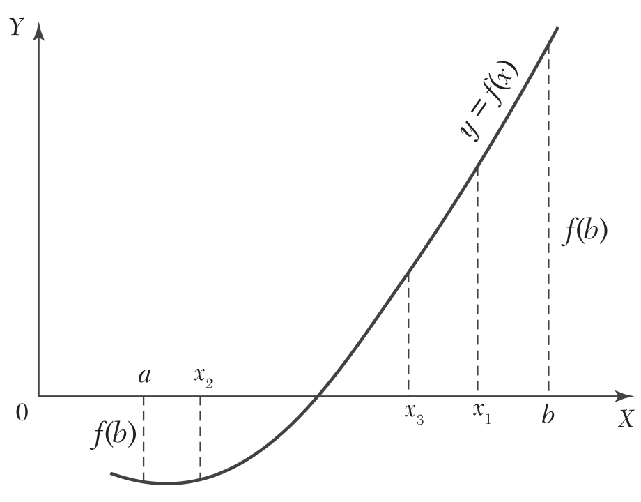

2.3 Bisection Method#
Prerequisites
Intermediate Value Theorem (IVT), continuity of real functions, \(\varepsilon\)-\(\delta\) analysis, fixed-point theory.
The method is a systematic binary search for the zero of \(f\). At each step the interval \([a_n, b_n]\) containing \(\xi\) is halved, and only the subinterval where the sign change is preserved is retained.
{kind=link}

Fig. 19 Schematic of the bisection process. The bracket \([a_n, b_n]\) halves at each iteration.#
Algorithm 1 (Bisection Method)
Input: \(f \in C([a_0,b_0])\), with \(f(a_0)\cdot f(b_0)<0\), tolerance \(\varepsilon > 0\).
Output: Approximation \(x_n \approx \xi\) such that \(|x_n - \xi| < \varepsilon\).
Iteration (\(n = 0,1,2,\dots\)):
Compute the midpoint
Stopping criterion: if \((b_n - a_n)/2 < \varepsilon\), return \(x_n\).
Update the bracket:
In the Figure Fig. 19 , \(f(x_1)>0\), so that the root lies between \([a_0,x_1]\). Then the second approximation to the root is \(x_2 = \frac{1}{2} (a_0 + x_1)\). If \(f(x_2)<0\), the root lies between \([x_1, x_2]\). Then the third approximation to the root is \(x_3 = \frac{1}{2} (x_1 + x_2)\) and so on.
2.3.1 Required Number of Iterations#
Since the new interval containing the root, is exactly half the length of the previous one, the interval width is reduced by a factor of \(\frac{1}{2}\) at each step. At the end of the \(n\)th step, the new interval will therefore, be of length:
If on repeating this process \(n\) times, the latest interval is as small as given \(\varepsilon\) then to ensure \((b_n - a_n)/2 < \varepsilon\), it suffices that:
Neglecting constants, a standard bound is:
Taking logarithms:
Equivalently using \(\left[\displaystyle{\log_b(x)=\frac{\log_a(x)}{\log_a(b)}}\right]\),
This gives the number of iterations required for achieving an accuracy \(\varepsilon\).
In particular, the minimum number of iterations required for converging to a root in the interval \([0, 1]\) for a given \(\varepsilon\) are as under:
Quick Reference Table
For \([a_0, b_0] = [0, 1]\) (unit interval):
Target accuracy \(\varepsilon\) |
Iterations required \(n\) |
|---|---|
\(10^{-2}\) |
\(7\) |
\(10^{-3}\) |
\(10\) |
\(10^{-4}\) |
\(14\) |
\(10^{-6}\) |
\(20\) |
\(10^{-9}\) |
\(30\) |
\(10^{-12}\) |
\(40\) |
Each additional decimal digit of accuracy costs roughly \(\log_2 10 \approx 3.32\) iterations.
2.3.2 Convergence Analysis#
Obs. 1. Since \(\xi \in [a_n, b_n]\) at every step, the error is bounded a priori:
Proposition 1 (A Priori Error Bound)
This is the key strength of the method: the error bound is explicit and computable before running the algorithm.
Rate of Convergence — Formal Proof#
Theorem 2 (Linear Convergence of Bisection)
The bisection method converges linearly with asymptotic constant \(C = \tfrac{1}{2}\):
Proof. At step \(n\), the midpoint is \(x_{n+1} = \tfrac{a_n+b_n}{2}\) and \(\xi \in [a_n, b_n]\), so
But also \(e_n \leq b_n - a_n\), and the bracket satisfies \(b_n - a_n = (b_0-a_0)/2^n\), giving
Since the ratio \(e_{n+1}/e_n \to 1/2\), convergence is linear with \(p=1\), \(C = 1/2\). \(\blacksquare\)
2.3.3. Worked Examples#
Example 1 — Polynomial Root (Grewal 2.15a)#
Find a root of
correct to three decimal places.
Bracketing: \(f(2) = -1 < 0\) and \(f(3) = 6 > 0\), so \(\xi \in (2, 3)\) by IVT.
Iterations:
\(n\) |
\(a_n\) |
\(b_n\) |
\(x_n = \tfrac{a+b}{2}\) |
\(f(x_n)\) |
New bracket |
|---|---|---|---|---|---|
1 |
2.0 |
3.0 |
2.5 |
\(-3.375\) |
\([2.5,\; 3.0]\) |
2 |
2.5 |
3.0 |
2.75 |
\(+0.797\) |
\([2.5,\; 2.75]\) |
3 |
2.5 |
2.75 |
2.625 |
\(-1.412\) |
\([2.625,\; 2.75]\) |
4 |
2.625 |
2.75 |
2.6875 |
\(-0.348\) |
\([2.6875,\; 2.75]\) |
5 |
2.6875 |
2.75 |
2.71875 |
\(+0.207\) |
\([2.6875,\; 2.71875]\) |
\(\vdots\) |
\(\vdots\) |
\(\vdots\) |
\(\vdots\) |
\(\vdots\) |
\(\vdots\) |
12 |
2.7060 |
2.7070 |
2.7064 |
\(\approx 0\) |
— |
A priori bound check: \(n=12\), \(b_0 - a_0 = 1\), so \(e_{12} \leq 1/2^{12} \approx 2.4 \times 10^{-4}\) — consistent with 3 d.p.
Implementation in C++#
C++ Implementation (Theory-aligned)
The following implementation follows exactly the notation introduced in the theory:
Interval: \([a_n, b_n]\)
Midpoint:
Stopping criterion:
Update rule based on sign change
The code is written in verbose mode for pedagogical purposes.
To use it in production, simply comment the indicated lines.
#include <cmath>
#include <functional>
#include <iostream>
#include <stdexcept>
// ------------------------------------------------------------
// Bisection Method (Verbose, Theory-consistent version)
// ------------------------------------------------------------
double bisection(const std::function<double(double)> &f,
double a_0, double b_0,
double epsilon = 1e-6,
int max_iter = 100) {
// Initial bracket: [a_0, b_0]
double a_n = a_0;
double b_n = b_0;
double f_a = f(a_n);
double f_b = f(b_n);
// IVT condition: f(a_0)*f(b_0) < 0
if (f_a * f_b >= 0) {
throw std::invalid_argument("Invalid bracket: no sign change.");
}
// Header (COMMENT THIS BLOCK for non-verbose version)
std::cout << "n\t a_n\t\t b_n\t\t x_n\t\t f(x_n)\n";
for (int n = 0; n < max_iter; ++n) {
// Midpoint: x_n = (a_n + b_n)/2
double x_n = 0.5 * (a_n + b_n);
double f_x = f(x_n);
// Print iteration (COMMENT THIS LINE for non-verbose version)
std::cout << n << "\t"
<< a_n << "\t\t"
<< b_n << "\t\t"
<< x_n << "\t\t"
<< f_x << "\n";
// Stopping criterion:
// (b_n - a_n)/2 < epsilon <=> |x_n - ξ| < ε (a priori bound)
if (std::abs(b_n - a_n) / 2.0 < epsilon || std::abs(f_x) < epsilon) {
return x_n;
}
// Update rule (preserve sign change)
if (f_a * f_x < 0) {
b_n = x_n;
f_b = f_x;
} else {
a_n = x_n;
f_a = f_x;
}
}
// Fallback (max_iter reached)
return 0.5 * (a_n + b_n);
}
// ------------------------------------------------------------
// Example
// ------------------------------------------------------------
int main() {
// Test function: f(x) = x^3 - 4x - 9
auto f = [](double x) {
return x * x * x - 4 * x - 9;
};
try {
double root = bisection(f, 2.0, 3.0, 1e-6);
std::cout << "\nApproximate root: "
<< root << std::endl;
} catch (const std::exception &e) {
std::cerr << e.what() << std::endl;
}
return 0;
}
Execution:
❯ time ./bisecOp
n a_n b_n x_n f(x_n)
0 2 3 2.5 -3.375
1 2.5 3 2.75 0.796875
2 2.5 2.75 2.625 -1.41211
3 2.625 2.75 2.6875 -0.339111
4 2.6875 2.75 2.71875 0.220917
5 2.6875 2.71875 2.70312 -0.0610771
6 2.70312 2.71875 2.71094 0.0794234
7 2.70312 2.71094 2.70703 0.00904924
8 2.70312 2.70703 2.70508 -0.0260449
9 2.70508 2.70703 2.70605 -0.00850557
10 2.70605 2.70703 2.70654 0.000269896
11 2.70605 2.70654 2.7063 -0.00411832
12 2.7063 2.70654 2.70642 -0.00192433
13 2.70642 2.70654 2.70648 -0.000827249
14 2.70648 2.70654 2.70651 -0.000278684
15 2.70651 2.70654 2.70653 -4.39577e-06
16 2.70653 2.70654 2.70654 0.00013275
17 2.70653 2.70654 2.70653 6.41769e-05
18 2.70653 2.70653 2.70653 2.98905e-05
19 2.70653 2.70653 2.70653 1.27474e-05
Approximate root: 2.70653
./bisecOp 0.00s user 0.00s system 87% cpu 0.004 total
Using the a priori estimate:
with \(b_0 - a_0 = 1\) and \(\varepsilon = 10^{-6}\):
Thus, the 20 iterations observed in the execution match exactly the theoretical requirement, confirming the sharpness of the bound.
Example 2 — Transcendental Equation (Grewal 2.17)#
Find a root of
Bracketing: \(f(0) = 1 > 0\) and \(f(1) = \cos 1 - e \approx -2.18 < 0\), so \(\xi \in (0, 1)\).
After 6 bisections: \(\xi \approx 0.5156\).
Core Results
References#
Grewal, B.S. Numerical Methods in Engineering and Science, Section 2.8.
Burden, R.L. & Faires, J.D. Numerical Analysis, 10th ed., §2.1.
Quarteroni, A., Saleri, F. & Gervasio, P. Scientific Computing with MATLAB and Octave, Ch. 6.